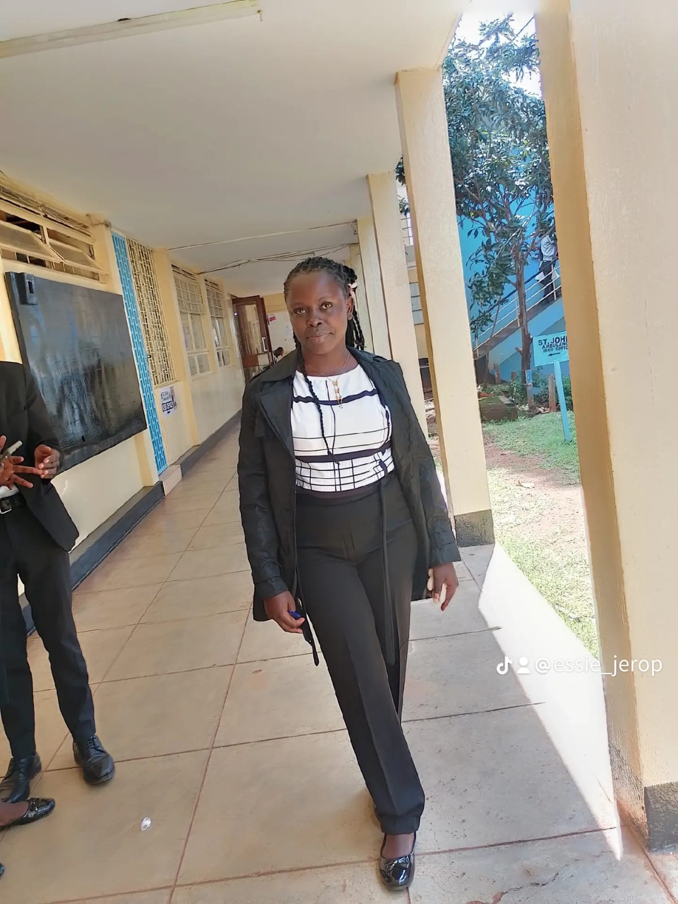

I am a student at Kisii University pursuing a Bachelor of science in Software Engineering. I am passionate about technology and software development.
My background includes studies in computer programming. Database management systems and web development.I enjoy learning new technologies and improving my skills.
After completing my course. I hope to become a professional software developer and contribute to building innovative systems that solve real-world problems.